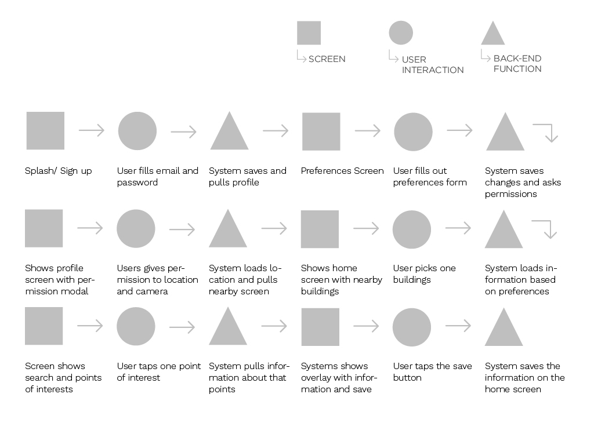
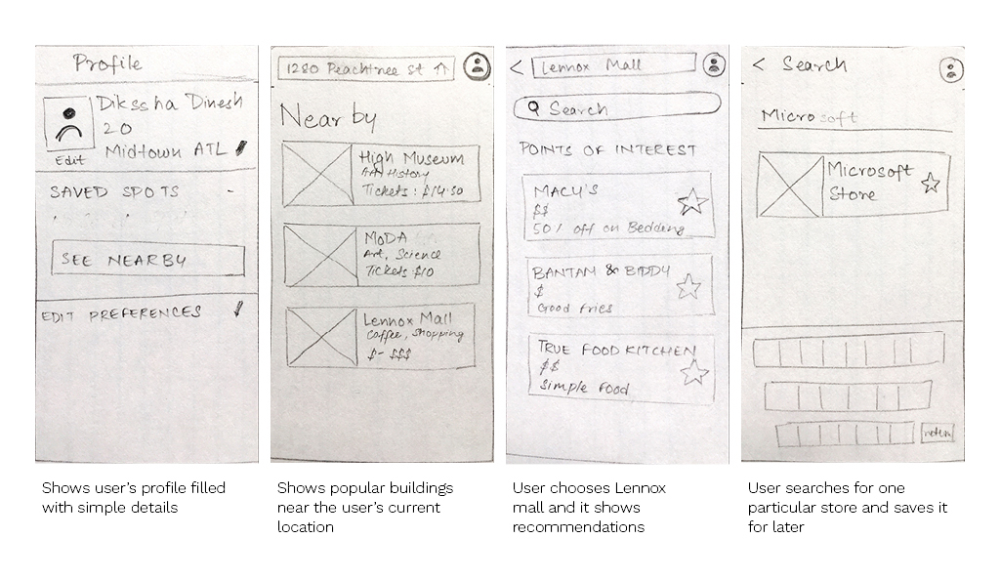

ABOUT
This app is inspired by my experiences trying to have fun with my family. Once a month the four of us would plan a trip to the mall, tons of research would go into which stores and restaurants are in the mall, we would make a rough mental plan of where we were going to stop and where we were going to eat. But, at the end of the day we would come home disappointed and upset.
Flows
The flows describe the movement of the user from one task to another as they go through the app. The flow moves between a screen, interaction and backend and then back to the next screen.The flows also show cause and effect for turning the pain points into brag points.

Sketches
The sketches are low fidelity drawings of each screen from the flows. The sketches resolve the hierarchy, iconography and layout for each screen. These sketches then became a paper prototype for a usability test.

Usability Tests
12 users were tested using a paper prototype, 5 users were familiar with the premise and purpose of the app before testing. 10 users visited malls often, other 2 liked the museum example. The 10 users generally wandered around to find spots inside the buildings.
Survey
- Do you visit malls or large buildings often?
- How do you navigate these buildings?
- Did it live upto your expectations?
- What else would improve your experience?
Learnings
- The flow of screens and sequence of events make sense, though some details on screen in terms of copy and iconography will make it easier to use.
- The “Give Recommendation” feature was not clear and confused many people.?
- Augmented Reality Map was exciting, but users felt a 2D map would also be helpful.
- Users would like competitor information to search results, with more sort and filter options.
- After user arrives at their location they would like to see a timeout screen or tap to make the direction screen go away
Brag Point website
A one page webpage was designed to show off the app to a potential user. The webpage was coded using Zurb Foundations and Animation.css libraries, gifs were built in After Effects